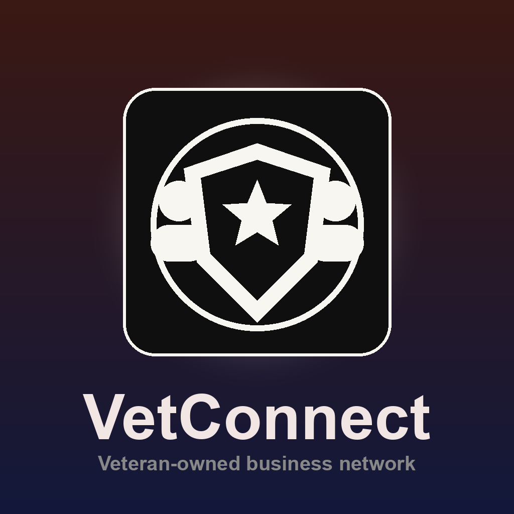

Search Businesses
Quickly search veteran-owned businesses by what they do and where they are.

VeteranConnectVeteran-owned business network
VeteranConnect makes it easy to discover local businesses, support veteran entrepreneurs, and connect communities through meaningful commerce.
Quickly search veteran-owned businesses by what they do and where they are.
View nearby businesses on an interactive map and open directions in Google Maps.
Entrepreneurs can create and manage profiles so customers can find and support them.
Every search, referral, and purchase helps strengthen veteran-owned local economies.
01
Look up businesses by name, service, or location.
02
Check business details and map location before visiting.
03
Choose veteran-owned businesses with confidence.
VeteranConnect exists to help veteran entrepreneurs get discovered and to make community support easier for everyone. The more visible these businesses become, the more opportunities they can create.
Download VeteranConnect on iOS and start exploring today.
Get VeteranConnect on the App Store